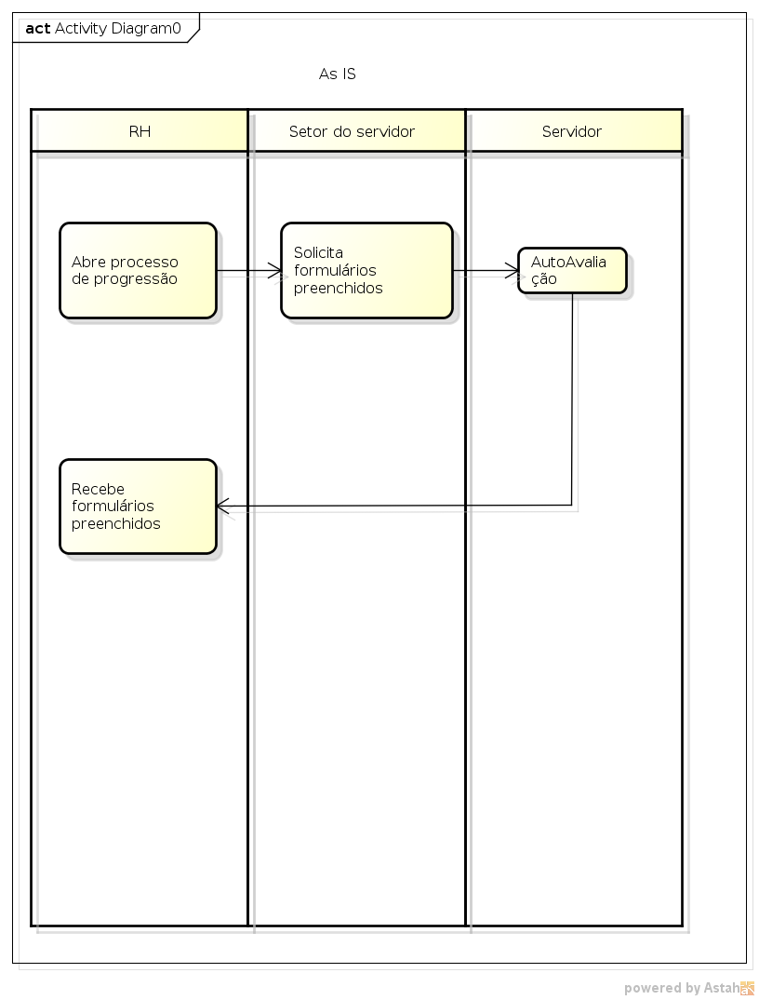
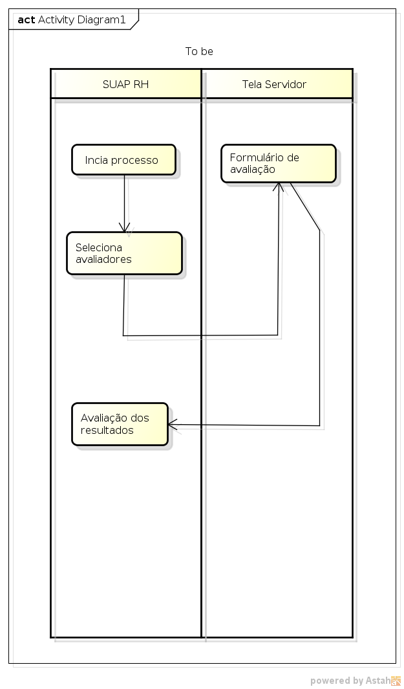
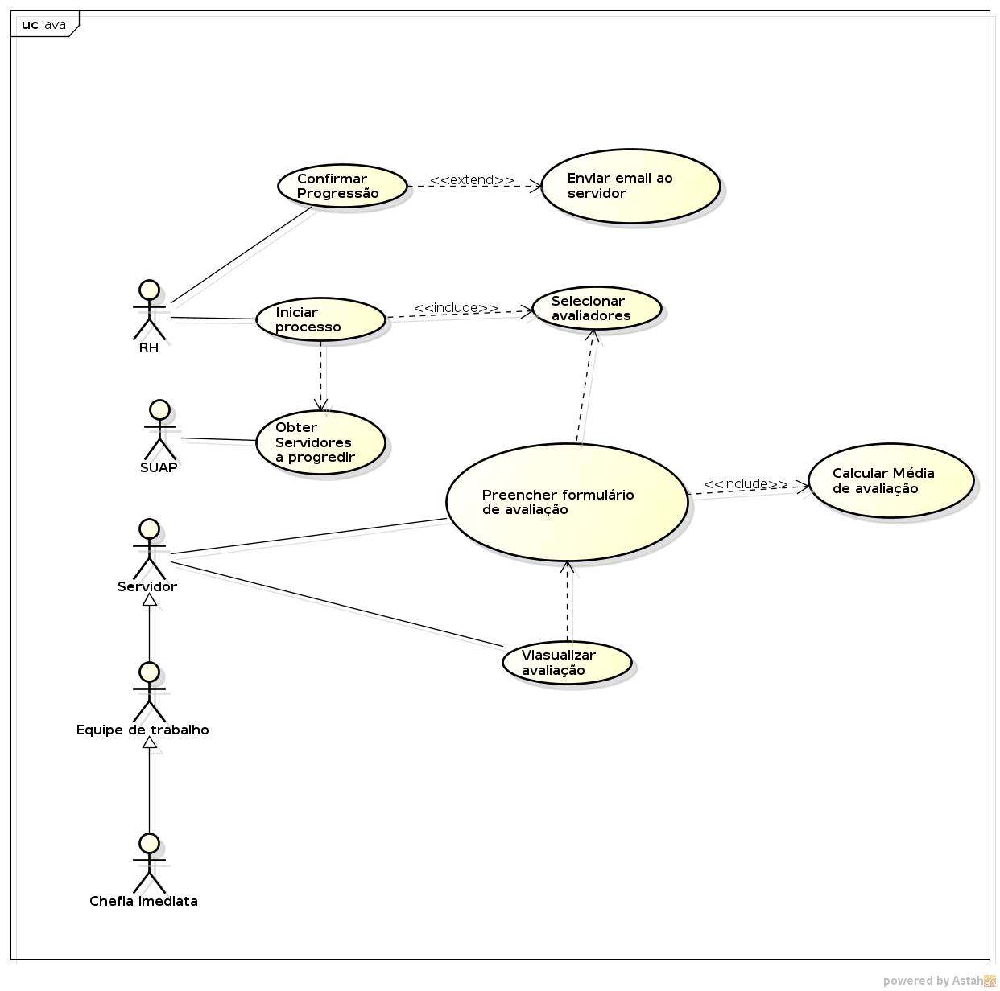
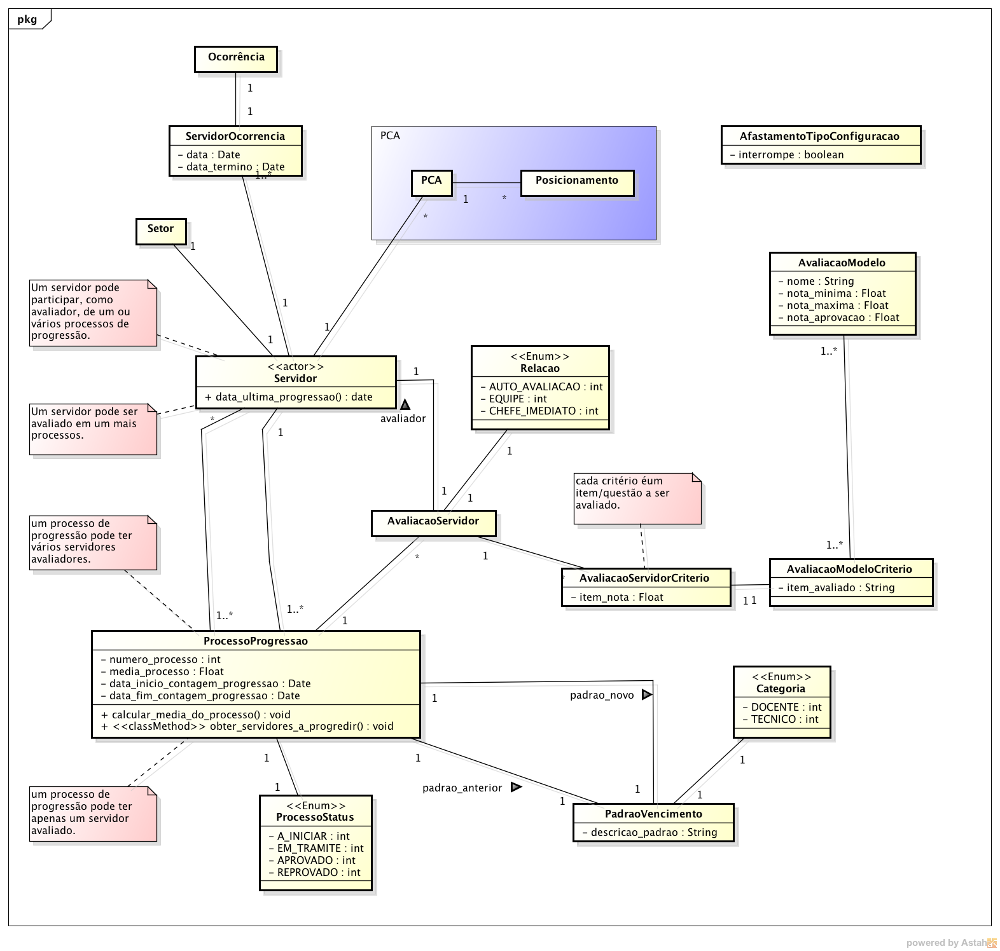

|
IFRN
COORDENAÇÃO DE SISTEMAS DE INFORMAÇÃO (COSINF)/DIGTI/RE
|
|||
|---|---|---|---|---|
PROCESSO DE SOFTWARE PARA A COSINF (COSINF-SUAP) |
||||
Documento de Visão de Produto |
||||
Nome do Projeto: |
Progressões |
|||
Documento de Visão do Subsistema Progressões <v0.1>¶
Conteúdo
Histórico da revisão¶
Data |
Versão |
Descrição |
Autor |
|---|---|---|---|
07/07/2014 |
0.1 |
Início do Documento |
Esdras Valentim |
09/07/2014 |
0.2 |
Inclusão dos casos de uso |
Esdras Valentim |
Introdução¶
Finalidade do documento¶
A finalidade deste documento é especificar os requisitos relevantes dos usuários, assim como os limites e restrições evidentes que dão uma visão geral. Essa visão viabiliza a identificação e a produção de documentos e requisitos mais técnicos, assim como do próprio sistema. A visão serve como forma de permitir a compreensão, pelos participantes do projeto, do “o quê e por quê” o projeto existe e provê uma estratégia a partir da qual todas as futuras decisões podem ser validadas.
Finalidade do sistema¶
Este módulo/aplicação tem como finalidade automatizar as progressões por mérito profissional dos servidores, utilizando um sistema integrado de avaliações composto de auto-avaliação, avaliação dos pares (de mesma função administrativa), avaliação dos subordinados e avaliação dos superiores.
Análise de contexto¶
Cenário¶
Não se aplica.
Motivações, necessidades e problemas¶
A motivação para o desenvolvimento do módulo é melhorar o processo de análise e automatizar as progressões por mérito profissional dos servidores. Uma progressão ocorre a cada interstício de 18 meses de efetivo exercício. Serão utilizados formulários on-line de avaliação e uma média será gerada de forma automática, servindo de base para o servidor progredir (aprovação) ou não (reprovação).
Escopo do produto¶
Declaração do escopo do produto¶
Nota
Seção utilizada para documentar novos produtos.
Forneça a declaração do escopo do produto, descrevendo as características do produto, serviço ou resultado que se deseja obter com a execução do projeto.
Aviso
Caso esteja documentando um produto já existente incluir o texto “Não se aplica.”
Não faz parte do escopo¶
O sistema não fará controle das progressões por capacitação profissional (I, II, III, IV);
Descrição dos papéis¶
Papel das partes interessadas¶
Representante |
Responsabilidades |
|---|---|
Raul Alexandre (DIGPE) |
Fornecer requisitos; Validar documentação; Testar/Homologar o software. |
Papel dos atores¶
Ator |
Sinônimo |
Descrição |
|---|---|---|
RH |
- |
|
SIAPE |
- |
Visão geral do produto¶
Modelagem de processos de negócio¶
 {kind=link}
Projeto da solução¶
Nota
Descreva aqui os elementos do modelo de projeto, que são importantes para a arquitetura, a estrutura de camadas e componentes do projeto.
Perspectiva do produto¶
Integração com outros sistemas¶
“Não se aplica.”
Relacionamentos com outros subsistemas¶
“Não se aplica.”
Requisitos¶
Cód |
Descrição |
Categoria |
|---|---|---|
R01 |
O sistema disponibilizará a opção para selecionar os avaliadores do servidor, independentemente do setor que ele está alocado. |
Especificação |
R02 |
O sistema deverá calcular a média das avaliações de acordo com o perfil do servidor. |
Especificação |
R03 |
O sistema disponibilizará os formulários de avaliação dos servidores para cada setor. |
Especificação |
R04 |
O Servidor deve ser aprovado se a média do período avaliado for igual ou superior a 60 pontos. |
Especificação |
R05 |
O Servidor removido ou redistribuído no período de avaliação deve ser avaliado na lotação anterior. |
Especificação |
R06 |
O servidor cedido à outra instituição num prazo igual ou superior a 06 meses deve ser avaliado no setor em que estiver. |
Especificação |
R07 |
O resultado da avaliação será obtido por uma média ponderada com pesos diferentes para cada grupo de avaliação, sendo peso 1 para auto-avaliação e avaliação da chefia imediata e peso 2 para avaliação da equipe de trabalho do servidor (a média de avaliação da equipe é a média aritmética da avalição feita pela equipe). |
Especificação |
R08 |
O servidor deve ser avaliado por: ele mesmo, equipe de trabalho e chefia imediata. |
Especificação |
Casos de uso¶
Cód, Nome, Versão |
Descrição |
Complexidade |
Requisitos relacionados |
|---|---|---|---|
Esse caso de uso descreve como o RH selecionará avaliadores que preencherão o formulário de avaliação de desempenho do servidor. |
Média |
R01 |
|
Esse caso de uso descreve a ação de mostrar todos os servidores que estão aptos a progredir. |
Baixa |
R01 |
|
Esse caso de uso descreve o preenchimento dos formuláros de avaliação por parte dos servidores. |
Média |
R03, R05, R06, R08 |
|
Esse caso de uso calcula a média de avaliação do servidor (com ou sem função). |
Média |
R02, R04, R07 |
|
Descreve a abertura do processo de progressão. |
Baixa |
R01 |
|
Descreve o ato de convalidar a progressão do servidor. |
Baixa |
R01 |
|
Descreve como o servidor será notificado da aprovação ou não da sua progressão. |
Baixa |
R01 |
Diagrama de caso de uso¶
{kind=link}
Diagrama de modelagem de domínio¶
{kind=link}
Metas gerenciais¶
Nota
Exemplo: O projeto deverá ser executado até o mês de Agosto de 2014.
Aviso
Caso esteja documentando um produto já existente incluir o texto “Não se aplica.”
Questões em aberto¶
Em caso de afastamento a data de progressão muda?
Se o servidor se afastar da função pouco antes da progressão, como ele será avaliado?
O tempo da progressão (18 meses) é fícto ou real?
Qual o tempo de antecedência que o suap deve informar que há servidores aptos a progredir?
Encerramento de Projetos¶
Nota
Esta seção visa além de formalizar o término do projeto discutir como foi o mesmo e coletar lições aprendidas. No processo de gerenciamento de projetos ele é o documento final. Durante o encerramento é interessante tratar assuntos como:
Os produtos previstos no projeto foram concluídos
O objetivo final do projeto foi alcançado
O resultado alcançado está coerente com a justificativa apresentada
Quais os principais problemas do projeto
Discutir sobre as lições aprendidas
Registrar na base de conhecimento da organização
Aviso
Caso esteja documentando um produto já existente incluir o texto “Não se aplica.”